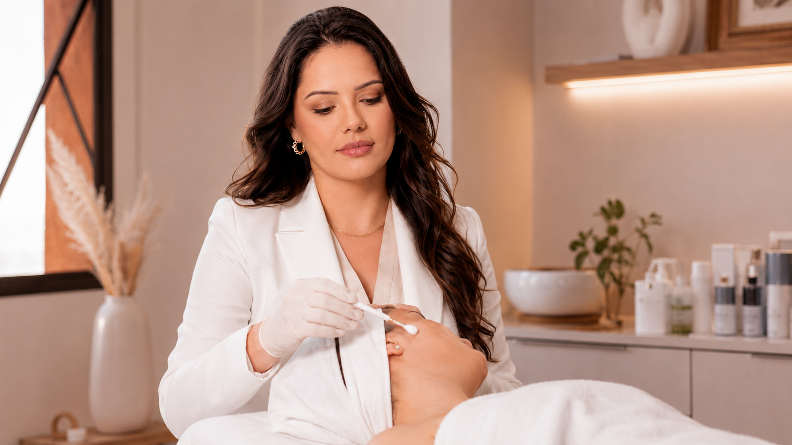

JORNAL Peeling de ATA e evidência
Peeling de ATA e melasma: o que mostrou um estudo com mulheres latino-americanas?
Um ensaio dividido por lados do rosto avaliou TCA superficial como complemento a medicamentos tópicos para melasma. Veja os resultados e os limites do estudo.

01 · A pergunta do ensaio
O TCA foi estudado como complemento a um plano tópico
Um ensaio prospectivo, randomizado e dividido por lados do rosto investigou mulheres latino-americanas com melasma. Os dois lados receberam hidroquinona e tretinoína tópicas; um dos lados também recebeu quatro peelings superficiais de ácido tricloroacético (TCA), realizados mensalmente. O desenho ajuda a perguntar se o peeling acrescentou algo àquele plano específico.
O estudo não testou TCA isoladamente e não avaliou todos os tipos de melasma, fórmulas, profundidades ou perfis de pacientes. O resultado não permite concluir que “peeling de ATA” seja uma intervenção uniforme.
02 · O que os resultados indicaram
Algumas medidas favoreceram o lado com peeling, mas nem todas
Trinta e três participantes concluíram o acompanhamento de 16 semanas. Os autores relataram melhora maior no lado que recebeu TCA em algumas escalas clínicas de gravidade, comparado ao lado que recebeu apenas os tópicos do estudo. Uma medida objetiva de pigmentação, porém, melhorou mais no lado sem peeling. Esse quadro misto é importante: não cabe resumir os achados como clareamento garantido ou superioridade em todos os desfechos.
Não foram observados eventos adversos graves nesse grupo, mas ocorreram acne em crise, vermelhidão, coceira, irritação, pequenas erosões, ardor e reativação de herpes. Uma amostra de 33 pessoas não descarta eventos menos comuns nem estabelece risco individual.
03 · O que limita a aplicação ao seu caso
Participantes, combinação e duração fazem diferença
As participantes tinham melasma facial bilateral moderado a grave; 25 tinham fototipo IV e oito fototipo III. O protocolo incluía medicamentos tópicos e pausas planejadas ao redor dos peelings. Gestação e amamentação estavam entre os critérios de exclusão. Esses elementos não são recomendações para iniciar, interromper ou combinar medicamentos por conta própria.
O seguimento terminou em 16 semanas. O ensaio não define manutenção de longo prazo, resposta a outra formulação, segurança de um protocolo local ou o que ocorrerá sem os tratamentos tópicos usados nele. Por isso, a pesquisa informa uma conversa clínica, não uma receita.
04 · Perguntas antes de decidir
Confirme o diagnóstico e o plano completo
- A mancha foi avaliada e é compatível com melasma?
- Qual é o agente, a formulação e a profundidade realmente propostos?
- O estudo citado usou a mesma combinação, população e acompanhamento?
- Quais benefícios, incertezas e eventos adversos devem ser discutidos?
- Como o plano considera recorrência, fotoproteção e alternativas?
A formulação e o protocolo do peeling de ATA nesta clínica precisam ser confirmados diretamente. Veja também o protocolo profissional de despigmentação e as diferenças entre melasma e outras manchas.
05 · Referência e limites
Ensaio clínico publicado
O estudo é um ensaio pequeno e de 16 semanas sobre TCA superficial acrescentado a hidroquinona e tretinoína tópicas. Ele não confirma um protocolo desta clínica nem indica que a combinação seja apropriada para qualquer pessoa.